[[1]]
[1] "rmarkdown" "stats" "graphics" "grDevices" "datasets" "utils"
[7] "methods" "base"
[[2]]
[1] "gapminder" "rmarkdown" "stats" "graphics" "grDevices" "datasets"
[7] "utils" "methods" "base"
[[3]]
[1] "lubridate" "forcats" "stringr" "dplyr" "purrr" "readr"
[7] "tidyr" "tibble" "ggplot2" "tidyverse" "gapminder" "rmarkdown"
[13] "stats" "graphics" "grDevices" "datasets" "utils" "methods"
[19] "base"
[[4]]
[1] "readxl" "lubridate" "forcats" "stringr" "dplyr" "purrr"
[7] "readr" "tidyr" "tibble" "ggplot2" "tidyverse" "gapminder"
[13] "rmarkdown" "stats" "graphics" "grDevices" "datasets" "utils"
[19] "methods" "base"
[[5]]
[1] "openxlsx" "readxl" "lubridate" "forcats" "stringr" "dplyr"
[7] "purrr" "readr" "tidyr" "tibble" "ggplot2" "tidyverse"
[13] "gapminder" "rmarkdown" "stats" "graphics" "grDevices" "datasets"
[19] "utils" "methods" "base"
[[6]]
[1] "gridExtra" "openxlsx" "readxl" "lubridate" "forcats" "stringr"
[7] "dplyr" "purrr" "readr" "tidyr" "tibble" "ggplot2"
[13] "tidyverse" "gapminder" "rmarkdown" "stats" "graphics" "grDevices"
[19] "datasets" "utils" "methods" "base"
[[7]]
[1] "ggExtra" "gridExtra" "openxlsx" "readxl" "lubridate" "forcats"
[7] "stringr" "dplyr" "purrr" "readr" "tidyr" "tibble"
[13] "ggplot2" "tidyverse" "gapminder" "rmarkdown" "stats" "graphics"
[19] "grDevices" "datasets" "utils" "methods" "base"
[[8]]
[1] "knitr" "ggExtra" "gridExtra" "openxlsx" "readxl" "lubridate"
[7] "forcats" "stringr" "dplyr" "purrr" "readr" "tidyr"
[13] "tibble" "ggplot2" "tidyverse" "gapminder" "rmarkdown" "stats"
[19] "graphics" "grDevices" "datasets" "utils" "methods" "base" Tidyverse and ggplot2 Analysis with Gapminder Dataset
Introduction
This R Markdown document demonstrates data manipulation and visualization using the tidyverse suite of packages, particularly dplyr, tidyr, readr, stringr, and ggplot2. We will use the gapminder dataset to perform various data operations and create visualizations. The document also includes solutions to the provided exercises.
Installing and Loading Packages
First, we load the necessary packages using renv.
library(renv)
renv::restore(prompt = FALSE)Exploring the Gapminder Dataset
Let’s take a look at the first few rows of the gapminder dataset.
# View first six rows
head(gapminder) # A tibble: 6 × 6
country continent year lifeExp pop gdpPercap
<fct> <fct> <int> <dbl> <int> <dbl>
1 Afghanistan Asia 1952 28.8 8425333 779.
2 Afghanistan Asia 1957 30.3 9240934 821.
3 Afghanistan Asia 1962 32.0 10267083 853.
4 Afghanistan Asia 1967 34.0 11537966 836.
5 Afghanistan Asia 1972 36.1 13079460 740.
6 Afghanistan Asia 1977 38.4 14880372 786.Data Manipulation with dplyr
The dplyr package provides functions for data manipulation, such as select(), filter(), mutate(), arrange(), summarise(), and group_by().
Selecting Columns
Select specific columns using select().
individual columns
# Select individual columns
sel_data <- gapminder %>% select(country, continent, pop)
head(sel_data)# A tibble: 6 × 3
country continent pop
<fct> <fct> <int>
1 Afghanistan Asia 8425333
2 Afghanistan Asia 9240934
3 Afghanistan Asia 10267083
4 Afghanistan Asia 11537966
5 Afghanistan Asia 13079460
6 Afghanistan Asia 14880372range of columns
# Select range of columns
sel_data <- gapminder %>% select(country, year:pop)
head(sel_data)# A tibble: 6 × 4
country year lifeExp pop
<fct> <int> <dbl> <int>
1 Afghanistan 1952 28.8 8425333
2 Afghanistan 1957 30.3 9240934
3 Afghanistan 1962 32.0 10267083
4 Afghanistan 1967 34.0 11537966
5 Afghanistan 1972 36.1 13079460
6 Afghanistan 1977 38.4 14880372Exclude columns
# Exclude columns
sel_data <- gapminder %>% select(-pop)
head(sel_data)# A tibble: 6 × 5
country continent year lifeExp gdpPercap
<fct> <fct> <int> <dbl> <dbl>
1 Afghanistan Asia 1952 28.8 779.
2 Afghanistan Asia 1957 30.3 821.
3 Afghanistan Asia 1962 32.0 853.
4 Afghanistan Asia 1967 34.0 836.
5 Afghanistan Asia 1972 36.1 740.
6 Afghanistan Asia 1977 38.4 786.Exclude multiple columns
# Exclude multiple columns
sel_data <- gapminder %>% select(-pop, -country)
head(sel_data)# A tibble: 6 × 4
continent year lifeExp gdpPercap
<fct> <int> <dbl> <dbl>
1 Asia 1952 28.8 779.
2 Asia 1957 30.3 821.
3 Asia 1962 32.0 853.
4 Asia 1967 34.0 836.
5 Asia 1972 36.1 740.
6 Asia 1977 38.4 786.Exclude a vector of columns
# Exclude a vector of columns
sel_data <- gapminder %>% select(-c(pop, country))
head(sel_data)# A tibble: 6 × 4
continent year lifeExp gdpPercap
<fct> <int> <dbl> <dbl>
1 Asia 1952 28.8 779.
2 Asia 1957 30.3 821.
3 Asia 1962 32.0 853.
4 Asia 1967 34.0 836.
5 Asia 1972 36.1 740.
6 Asia 1977 38.4 786.Exclude a Complement of columns
# Complement of columns
f1 <- gapminder %>% select(!c(continent, gdpPercap))
head(f1)# A tibble: 6 × 4
country year lifeExp pop
<fct> <int> <dbl> <int>
1 Afghanistan 1952 28.8 8425333
2 Afghanistan 1957 30.3 9240934
3 Afghanistan 1962 32.0 10267083
4 Afghanistan 1967 34.0 11537966
5 Afghanistan 1972 36.1 13079460
6 Afghanistan 1977 38.4 14880372Rename columns with select
# Rename columns with select
sel_data <- gapminder %>% select(Life_Expectancy = lifeExp)
head(sel_data)# A tibble: 6 × 1
Life_Expectancy
<dbl>
1 28.8
2 30.3
3 32.0
4 34.0
5 36.1
6 38.4Rename columns with rename()
# Rename columns with rename()
sel_data <- gapminder %>% rename(Life_Expectancy = lifeExp)
head(sel_data)# A tibble: 6 × 6
country continent year Life_Expectancy pop gdpPercap
<fct> <fct> <int> <dbl> <int> <dbl>
1 Afghanistan Asia 1952 28.8 8425333 779.
2 Afghanistan Asia 1957 30.3 9240934 821.
3 Afghanistan Asia 1962 32.0 10267083 853.
4 Afghanistan Asia 1967 34.0 11537966 836.
5 Afghanistan Asia 1972 36.1 13079460 740.
6 Afghanistan Asia 1977 38.4 14880372 786.Additional Selection Methods
Select columns using indices, ranges, or specific patterns.
Select by index
# Select by index
gapminder %>% select(c(2, 3)) %>% head()# A tibble: 6 × 2
continent year
<fct> <int>
1 Asia 1952
2 Asia 1957
3 Asia 1962
4 Asia 1967
5 Asia 1972
6 Asia 1977Select by index range
# Select by index range
gapminder %>% select(2:3) %>% head()# A tibble: 6 × 2
continent year
<fct> <int>
1 Asia 1952
2 Asia 1957
3 Asia 1962
4 Asia 1967
5 Asia 1972
6 Asia 1977Exclude by labels
# Select by labels
gapminder %>% select(c('country', 'continent')) %>% head()# A tibble: 6 × 2
country continent
<fct> <fct>
1 Afghanistan Asia
2 Afghanistan Asia
3 Afghanistan Asia
4 Afghanistan Asia
5 Afghanistan Asia
6 Afghanistan Asia Exclude by labels
# Exclude by labels
gapminder %>% select(-c('country', 'continent')) %>% head()# A tibble: 6 × 4
year lifeExp pop gdpPercap
<int> <dbl> <int> <dbl>
1 1952 28.8 8425333 779.
2 1957 30.3 9240934 821.
3 1962 32.0 10267083 853.
4 1967 34.0 11537966 836.
5 1972 36.1 13079460 740.
6 1977 38.4 14880372 786.Select columns ending with ‘p’
# Select columns starting with 'co'
gapminder %>% select(starts_with('co')) %>% head()# A tibble: 6 × 2
country continent
<fct> <fct>
1 Afghanistan Asia
2 Afghanistan Asia
3 Afghanistan Asia
4 Afghanistan Asia
5 Afghanistan Asia
6 Afghanistan Asia Select columns ending with ‘p’
# Select columns ending with 'p'
gapminder %>% select(ends_with('p')) %>% head()# A tibble: 6 × 3
lifeExp pop gdpPercap
<dbl> <int> <dbl>
1 28.8 8425333 779.
2 30.3 9240934 821.
3 32.0 10267083 853.
4 34.0 11537966 836.
5 36.1 13079460 740.
6 38.4 14880372 786.# Select columns containing ‘pop’
# Select columns containing 'pop'
gapminder %>% select(contains('pop')) %>% head()# A tibble: 6 × 1
pop
<int>
1 8425333
2 9240934
3 10267083
4 11537966
5 13079460
6 14880372Filtering Rows
Use filter() to subset rows based on conditions.
Filter for Belgium
# Filter for Belgium
filt_data <- gapminder %>% filter(country == "Belgium") %>% head(8)
filt_data# A tibble: 8 × 6
country continent year lifeExp pop gdpPercap
<fct> <fct> <int> <dbl> <int> <dbl>
1 Belgium Europe 1952 68 8730405 8343.
2 Belgium Europe 1957 69.2 8989111 9715.
3 Belgium Europe 1962 70.2 9218400 10991.
4 Belgium Europe 1967 70.9 9556500 13149.
5 Belgium Europe 1972 71.4 9709100 16672.
6 Belgium Europe 1977 72.8 9821800 19118.
7 Belgium Europe 1982 73.9 9856303 20980.
8 Belgium Europe 1987 75.4 9870200 22526.Filter with multiple conditions
# Filter with multiple conditions
gapminder %>%
filter(country == "Oman" & year > 1980 & year <= 2000) %>%
head(8)# A tibble: 4 × 6
country continent year lifeExp pop gdpPercap
<fct> <fct> <int> <dbl> <int> <dbl>
1 Oman Asia 1982 62.7 1301048 12955.
2 Oman Asia 1987 67.7 1593882 18115.
3 Oman Asia 1992 71.2 1915208 18617.
4 Oman Asia 1997 72.5 2283635 19702.Filter using %in% operator
# Filter using %in% operator
scandinavia <- c("Denmark", "Iceland", "Norway", "Sweden", "Finland")
res <- gapminder %>% filter(country %in% scandinavia)
head(res)# A tibble: 6 × 6
country continent year lifeExp pop gdpPercap
<fct> <fct> <int> <dbl> <int> <dbl>
1 Denmark Europe 1952 70.8 4334000 9692.
2 Denmark Europe 1957 71.8 4487831 11100.
3 Denmark Europe 1962 72.4 4646899 13583.
4 Denmark Europe 1967 73.0 4838800 15937.
5 Denmark Europe 1972 73.5 4991596 18866.
6 Denmark Europe 1977 74.7 5088419 20423.Combining Select and Filter
Combine select() and filter() to extract specific data.
uk_gdp <- gapminder %>%
filter(country == "United Kingdom") %>%
select(country, year, gdpPercap)
head(uk_gdp)# A tibble: 6 × 3
country year gdpPercap
<fct> <int> <dbl>
1 United Kingdom 1952 9980.
2 United Kingdom 1957 11283.
3 United Kingdom 1962 12477.
4 United Kingdom 1967 14143.
5 United Kingdom 1972 15895.
6 United Kingdom 1977 17429.Mutating Data
Use mutate() to create new columns and transmute() to keep only new columns.
Using Mutate to add new columns
# Add new columns
gapminder %>%
mutate(pop_million = pop / 1000000,
countName = substring(country, 1, 3)) %>%
head()# A tibble: 6 × 8
country continent year lifeExp pop gdpPercap pop_million countName
<fct> <fct> <int> <dbl> <int> <dbl> <dbl> <chr>
1 Afghanistan Asia 1952 28.8 8425333 779. 8.43 Afg
2 Afghanistan Asia 1957 30.3 9240934 821. 9.24 Afg
3 Afghanistan Asia 1962 32.0 10267083 853. 10.3 Afg
4 Afghanistan Asia 1967 34.0 11537966 836. 11.5 Afg
5 Afghanistan Asia 1972 36.1 13079460 740. 13.1 Afg
6 Afghanistan Asia 1977 38.4 14880372 786. 14.9 Afg Using Mutate to Keep only new columns
# Keep only new columns
gapminder %>% transmute(total_years = lifeExp * pop) %>% head()# A tibble: 6 × 1
total_years
<dbl>
1 242658016.
2 280296010.
3 328515855.
4 392521603.
5 472011552.
6 571971739.Using Mutate to Classify GDP per capita
# Classify GDP per capita
gapminder %>%
mutate(GDP_Category = ifelse(gdpPercap > 10000, "High", "Low")) %>%
select(country, year, gdpPercap, GDP_Category) %>%
head(10)# A tibble: 10 × 4
country year gdpPercap GDP_Category
<fct> <int> <dbl> <chr>
1 Afghanistan 1952 779. Low
2 Afghanistan 1957 821. Low
3 Afghanistan 1962 853. Low
4 Afghanistan 1967 836. Low
5 Afghanistan 1972 740. Low
6 Afghanistan 1977 786. Low
7 Afghanistan 1982 978. Low
8 Afghanistan 1987 852. Low
9 Afghanistan 1992 649. Low
10 Afghanistan 1997 635. Low Arranging Data
Sort data using arrange().
Sort in ascending order
# Sort in ascending order
gapminder %>% arrange(year, gdpPercap) %>% head()# A tibble: 6 × 6
country continent year lifeExp pop gdpPercap
<fct> <fct> <int> <dbl> <int> <dbl>
1 Lesotho Africa 1952 42.1 748747 299.
2 Guinea-Bissau Africa 1952 32.5 580653 300.
3 Eritrea Africa 1952 35.9 1438760 329.
4 Myanmar Asia 1952 36.3 20092996 331
5 Burundi Africa 1952 39.0 2445618 339.
6 Ethiopia Africa 1952 34.1 20860941 362.Sort in descending order
# Sort in descending order
gapminder %>% arrange(year, desc(gdpPercap)) %>% head()# A tibble: 6 × 6
country continent year lifeExp pop gdpPercap
<fct> <fct> <int> <dbl> <int> <dbl>
1 Kuwait Asia 1952 55.6 160000 108382.
2 Switzerland Europe 1952 69.6 4815000 14734.
3 United States Americas 1952 68.4 157553000 13990.
4 Canada Americas 1952 68.8 14785584 11367.
5 New Zealand Oceania 1952 69.4 1994794 10557.
6 Norway Europe 1952 72.7 3327728 10095.Summarizing Data
Compute summary statistics with summarise().
scandinavia <- c("Denmark", "Iceland", "Norway", "Sweden", "Finland")
gapminder %>%
filter(year == 1982 & country %in% scandinavia) %>%
summarise(n_obs = n(),
total_pop = sum(pop),
mean_life_exp = mean(lifeExp),
range_life_exp = max(lifeExp) - min(lifeExp))# A tibble: 1 × 4
n_obs total_pop mean_life_exp range_life_exp
<int> <int> <dbl> <dbl>
1 5 22618787 75.7 2.44Grouping Data
Group data with group_by() for per-group summaries.
gapminder %>%
group_by(year) %>%
summarise(n_obs = n(),
n_countries = n_distinct(country),
total_pop = sum(pop),
mean_life_exp = mean(lifeExp),
range_life_exp = max(lifeExp) - min(lifeExp))# A tibble: 12 × 6
year n_obs n_countries total_pop mean_life_exp range_life_exp
<int> <int> <int> <dbl> <dbl> <dbl>
1 1952 142 142 2406957150 49.1 43.9
2 1957 142 142 2664404580 51.5 43.1
3 1962 142 142 2899782974 53.6 41.7
4 1967 142 142 3217478384 55.7 40.1
5 1972 142 142 3576977158 57.6 39.3
6 1977 142 142 3930045807 59.6 44.9
7 1982 142 142 4289436840 61.5 38.7
8 1987 142 142 4691477418 63.2 38.8
9 1992 142 142 5110710260 64.2 55.8
10 1997 142 142 5515204472 65.0 44.6
11 2002 142 142 5886977579 65.7 42.8
12 2007 142 142 6251013179 67.0 43.0Joining Data
Perform joins using inner_join(), left_join(), right_join(), and full_join().
Example data for joining
# Create sample datasets
employees <- data.frame(
id = c(1, 2, 3, 4),
name = c("Alice", "Bob", "Charlie", "David"),
age = c(25, 30, 22, 28)
)# Create sample datasets
departments <- data.frame(
id = c(2, 3, 5, 6),
department = c("HR", "Finance", "IT", "Sales")
)Inner join
# Perform inner join
employees %>% inner_join(departments, by = "id") id name age department
1 2 Bob 30 HR
2 3 Charlie 22 Financeleft join
# Perform left join
employees %>% left_join(departments, by = "id") id name age department
1 1 Alice 25 <NA>
2 2 Bob 30 HR
3 3 Charlie 22 Finance
4 4 David 28 <NA>right join
# Perform right join
employees %>% right_join(departments, by = "id") id name age department
1 2 Bob 30 HR
2 3 Charlie 22 Finance
3 5 <NA> NA IT
4 6 <NA> NA Salesfull join
# Perform full join
employees %>% full_join(departments, by = "id") id name age department
1 1 Alice 25 <NA>
2 2 Bob 30 HR
3 3 Charlie 22 Finance
4 4 David 28 <NA>
5 5 <NA> NA IT
6 6 <NA> NA SalesReading and Writing Files
Use readr to read and write delimited files, and openxlsx for Excel files.
Write to a file
# Write to a file
write_delim(res, "./methods_for_data_scince/applied_R/episodes/data/gapminder2.txt", delim = "\t")Write to Excel
# Write to Excel
write.xlsx(res, file = "./methods_for_data_scince/applied_R/episodes/data//gapm3.xlsx", sheetName = "gap", colNames = TRUE, rowNames = TRUE)Read from Excel
# Read from Excel
xl <- read.xlsx("./methods_for_data_scince/applied_R/episodes/data//gapm3.xlsx", sheet = "gap")Tidying Data with tidyr
Handle missing values using tidyr.
Sample data with missing values
# Sample data with missing values
df <- data.frame(
Name = c("Alice", "Bob", "Charlie", NA, "Eve"),
Age = c(25, NA, 30, 28, 22),
Score = c(80, 90, NA, 75, 95)
)Remove rows with any NA
# Remove rows with any NA
df_clean <- drop_na(df)Remove rows with NA in specific column
# Remove rows with NA in specific column
df_clean_age <- drop_na(df, Age)Replace NA values
# Replace NA values
df_filled <- df %>% replace_na(list(Age = 0, Score = 50, Name = "Unknown"))String Manipulation with stringr
Perform string operations using stringr.
Split string with stringr
# Split string
text <- "Hello world, welcome to R programming!"
words <- str_split(text, " ")
print(words)[[1]]
[1] "Hello" "world," "welcome" "to" "R"
[6] "programming!"Here we split the sentence up into a list of words
Access specific word with stringr
# Access specific word
print(words[[1]][3])[1] "welcome"We can print specific works in the list
Extract substring with stringr
kirtqsdorsbh#| echo: true #| echo: true # Extract substring sub_text <- str_sub(text, 7, 11) print(sub_text)
we can extract a substring
Replace substring with stringr
# Replace substring
str_sub(text, 1, 5) <- "Hi"
print(text)[1] "Hi world, welcome to R programming!"and we can replace a substring directly
Visualizations with ggplot2
Create visualizations using ggplot2.
Scatter plot with ggplot2
# Basic scatter plot
ggplot(data = gapminder, aes(x = lifeExp, y = gdpPercap)) +
geom_point()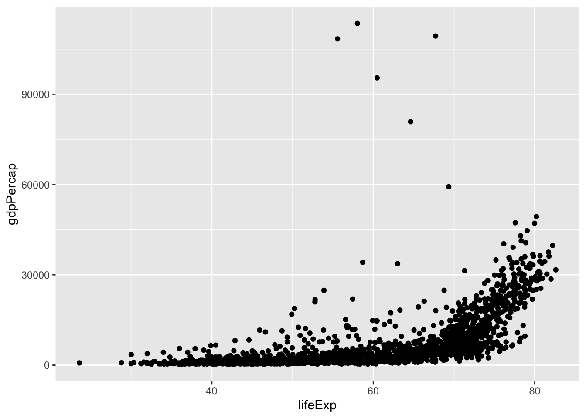
Bar plot with ggplot2
# Bar plot
ggplot(data = gapminder, aes(x = continent)) +
geom_bar()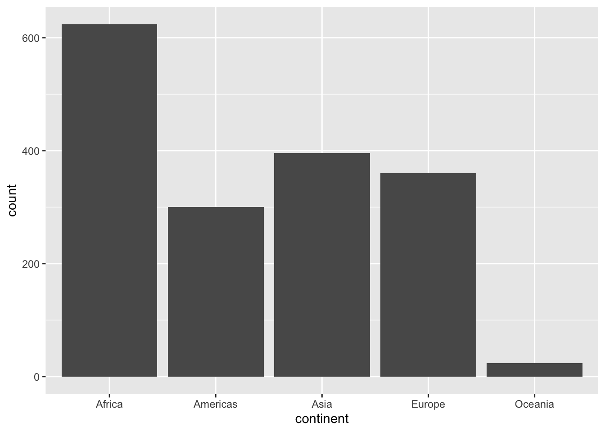
Histogram plot with ggplot2
# Histogram
ggplot(data = gapminder, aes(x = lifeExp)) +
geom_histogram()`stat_bin()` using `bins = 30`. Pick better value with `binwidth`.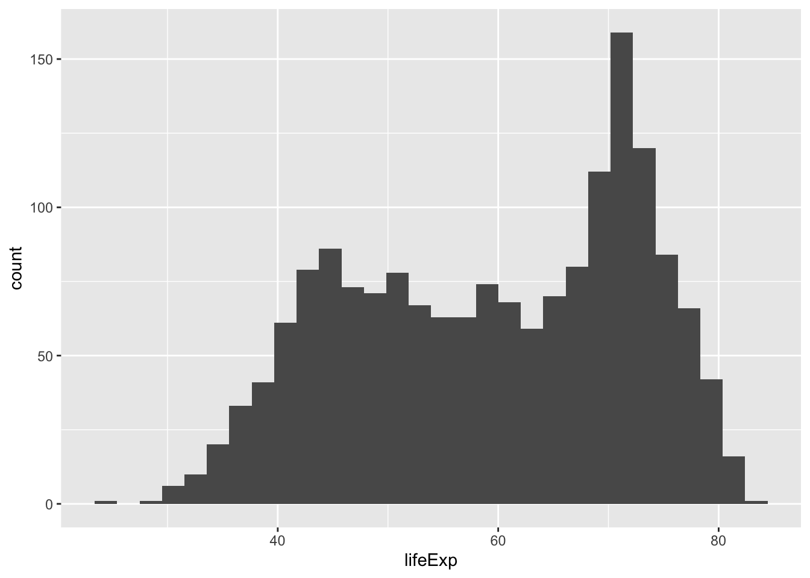
Box plot with ggplot2
# Box plot
ggplot(gapminder, aes(x = continent, y = lifeExp)) +
geom_boxplot()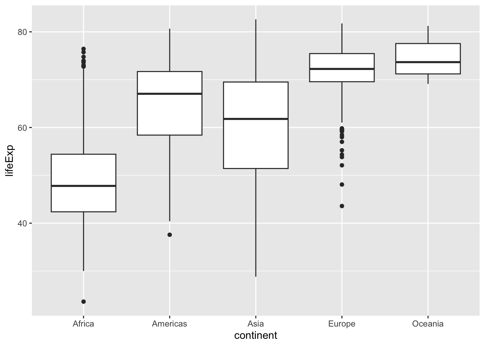
Violin plot with ggplot2
# Violin plot
ggplot(gapminder, aes(x = continent, y = gdpPercap)) +
geom_violin()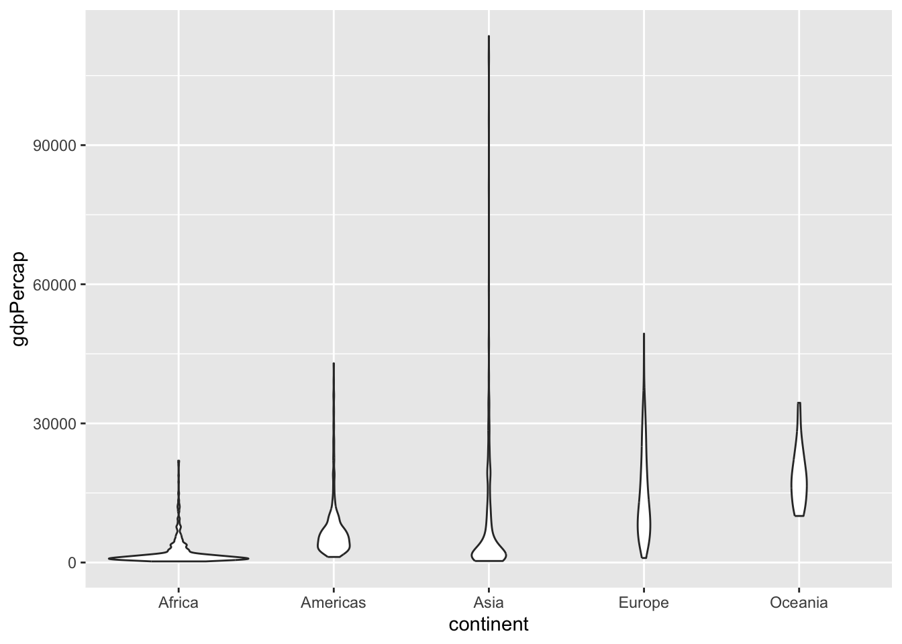
Scatter plot with color aesthetic with ggplot2
# Scatter plot with color aesthetic
ggplot(data = gapminder, aes(x = lifeExp, y = gdpPercap, color = continent)) +
geom_point()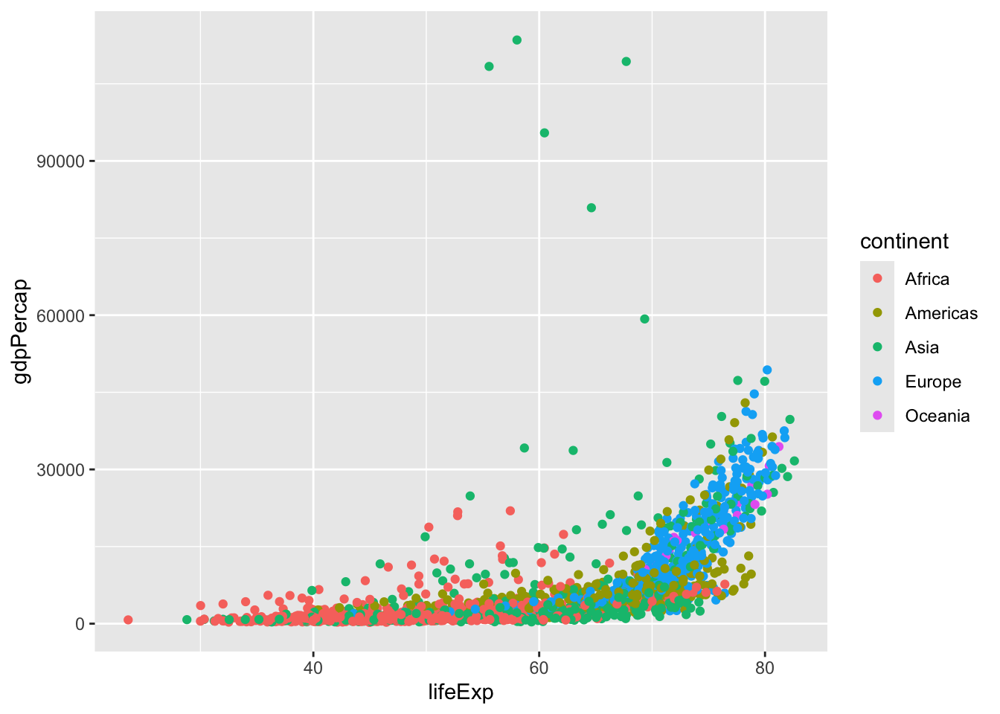
Scatter plot with custom color
# Scatter plot with custom color
ggplot(data = gapminder, aes(x = lifeExp, y = gdpPercap)) +
geom_point(color = "red")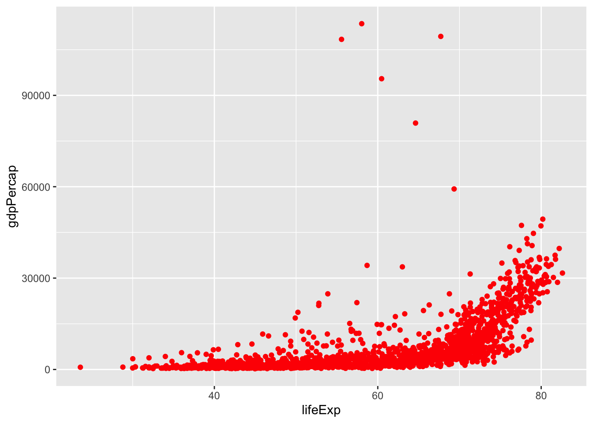
Scatter plot with smooth line
# Scatter plot with smooth line
ggplot(data = gapminder, aes(x = lifeExp, y = gdpPercap)) +
geom_point() +
geom_smooth(alpha = 0.5)`geom_smooth()` using method = 'gam' and formula = 'y ~ s(x, bs = "cs")'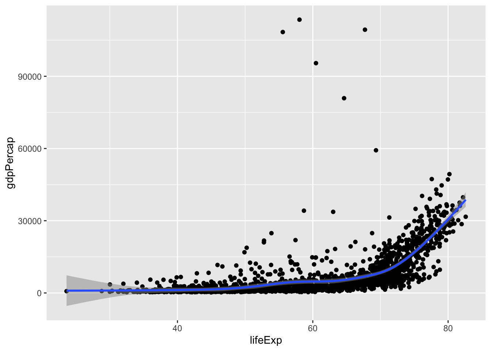
Faceted plot in ggplot2
# Faceted plot
ggplot(data = gapminder, aes(x = lifeExp, y = gdpPercap)) +
geom_point() +
geom_smooth(alpha = 0.5) +
facet_wrap(~continent)`geom_smooth()` using method = 'loess' and formula = 'y ~ x'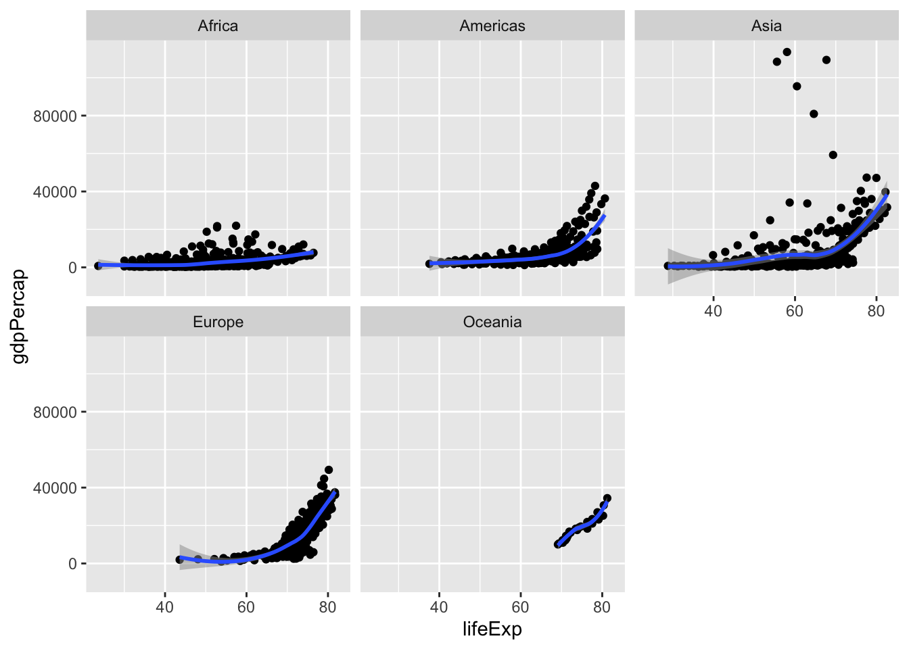
Customized axes
# Customized axes
ggplot(data = gapminder, aes(x = lifeExp, y = gdpPercap)) +
geom_point() +
geom_smooth(alpha = 0.5) +
xlab("Life Expectancy") +
ylab("GDP Per Capita") +
xlim(0, 70) +
ylim(0, 100000)`geom_smooth()` using method = 'gam' and formula = 'y ~ s(x, bs = "cs")'Warning: Removed 496 rows containing non-finite outside the scale range
(`stat_smooth()`).Warning: Removed 496 rows containing missing values or values outside the scale range
(`geom_point()`).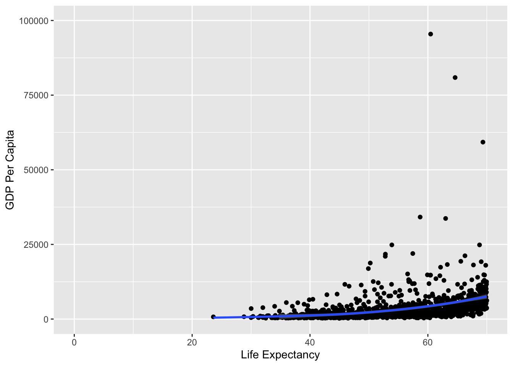
Box plot with customized y-axis
# Box plot with customized y-axis
ggplot(gapminder, aes(x = continent, y = lifeExp)) +
geom_boxplot() +
scale_y_continuous(name = "Life Expectancy (Years)",
limits = c(10, 90),
breaks = c(10, 20, 30, 40, 50, 60, 70, 80, 90))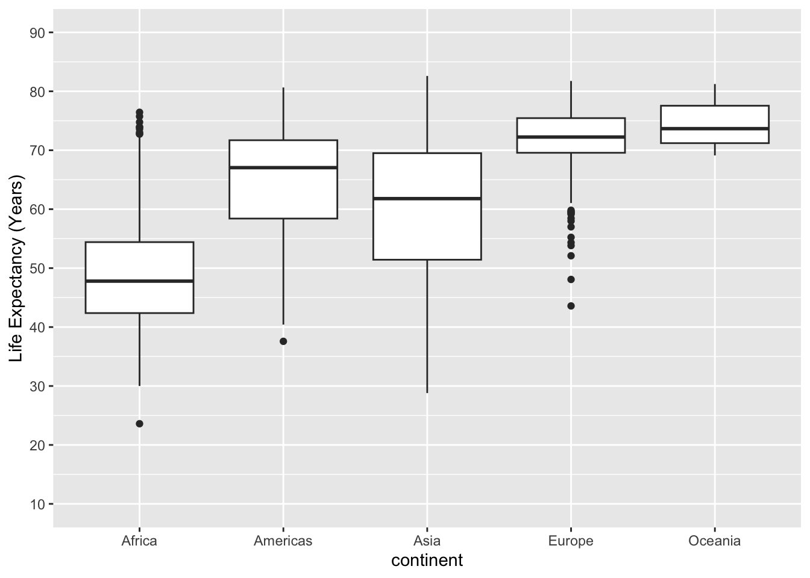
Box plot with customized x-axis
# Box plot with customized x-axis
ggplot(gapminder, aes(x = continent, y = lifeExp)) +
geom_boxplot() +
scale_x_discrete(name = "Continent",
labels = c("Africa" = "AF", "Americas" = "AM",
"Asia" = "AS", "Europe" = "EU", "Oceania" = "OC"))Color gradient scale
# Color gradient scale
ggplot(data = gapminder, aes(x = gdpPercap, y = lifeExp, color = pop)) +
geom_point() +
scale_color_gradient(low = "blue", high = "red")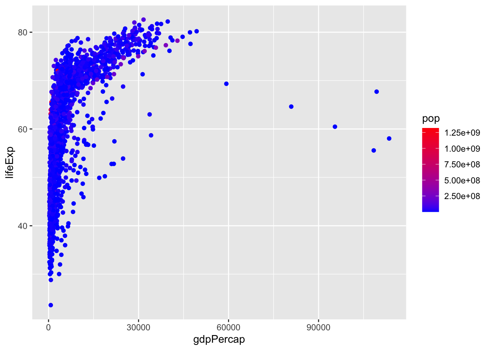
Discrete color scale
# Discrete color scale
ggplot(data = gapminder, aes(x = gdpPercap, y = lifeExp, color = continent)) +
geom_point() +
scale_color_manual(values = c("#1f78b4", "#33a02c", "#e31a1c", "#ff7f00", "#6a3d9a"))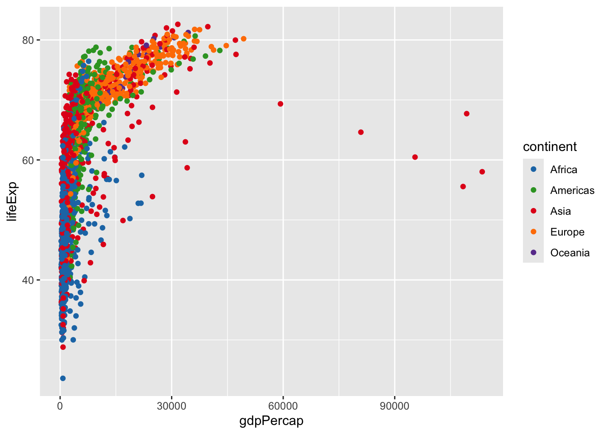
Plot with color palette
# Plot with color palette
ggplot(data = gapminder, aes(x = lifeExp, y = gdpPercap)) +
geom_point(aes(fill = continent), size = 5, shape = 21) +
geom_smooth(alpha = 0.5) +
scale_fill_brewer(palette = "Set2") +
theme_minimal()`geom_smooth()` using method = 'gam' and formula = 'y ~ s(x, bs = "cs")'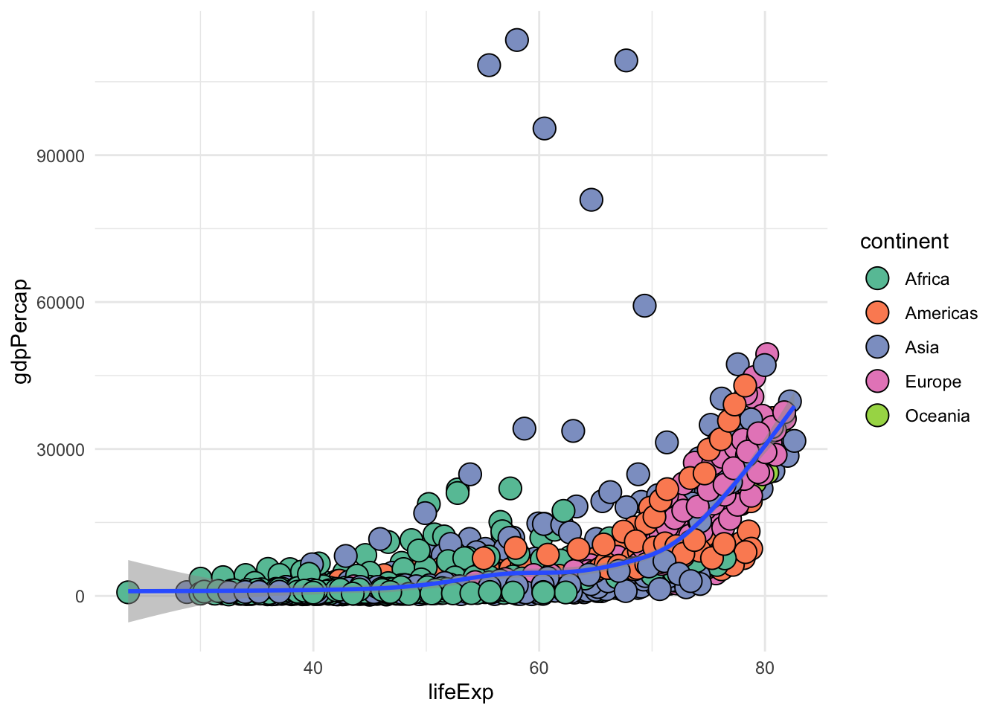
Box plot with theme_classic
# Box plot with theme_classic
ggplot(gapminder, aes(x = continent, y = lifeExp)) +
geom_boxplot() +
theme_classic()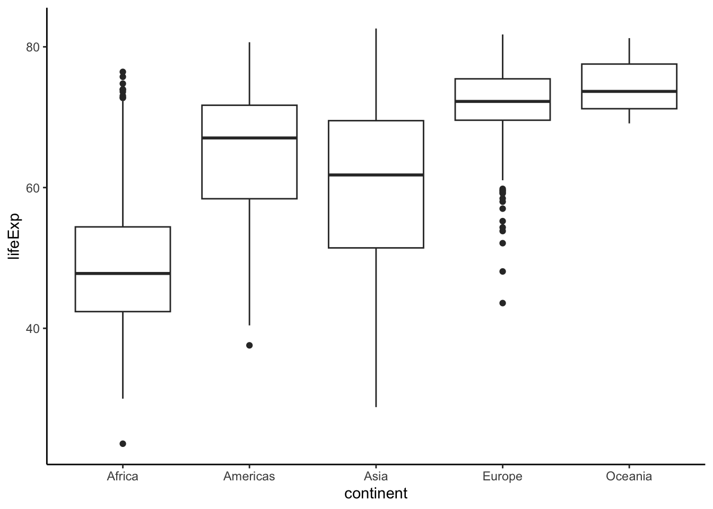
Box plot with jitter
# Box plot with jitter
ggplot(gapminder, aes(x = continent, y = lifeExp)) +
geom_boxplot(outlier.colour = "hotpink") +
geom_jitter(position = position_jitter(width = 0.1, height = 0), alpha = 1/4)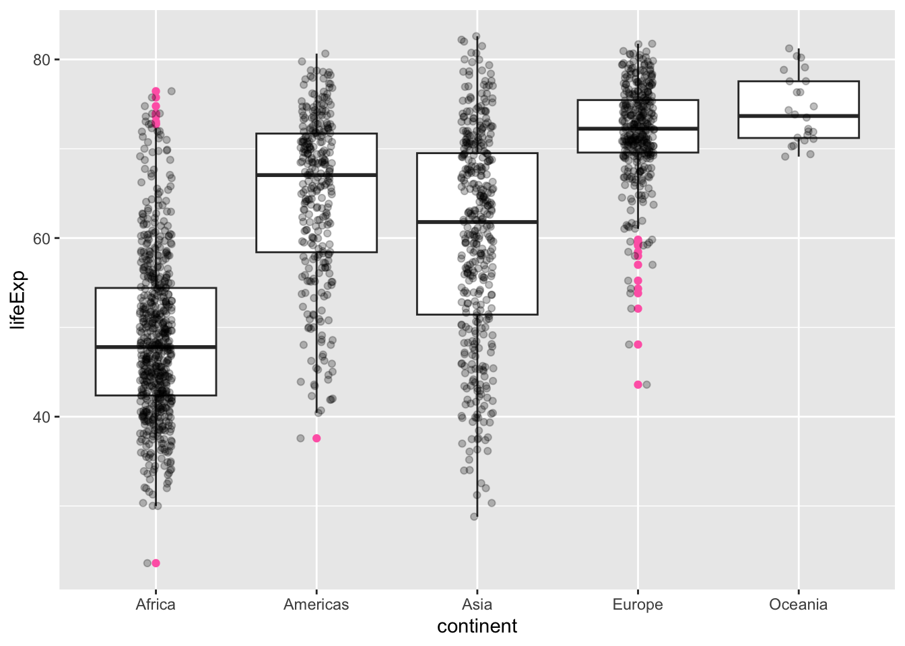
Combined violin and box plot
# Combined violin and box plot
ggplot(gapminder) +
geom_violin(aes(x = continent, y = gdpPercap), scale = "width") +
geom_boxplot(aes(x = continent, y = gdpPercap), width = 0.1)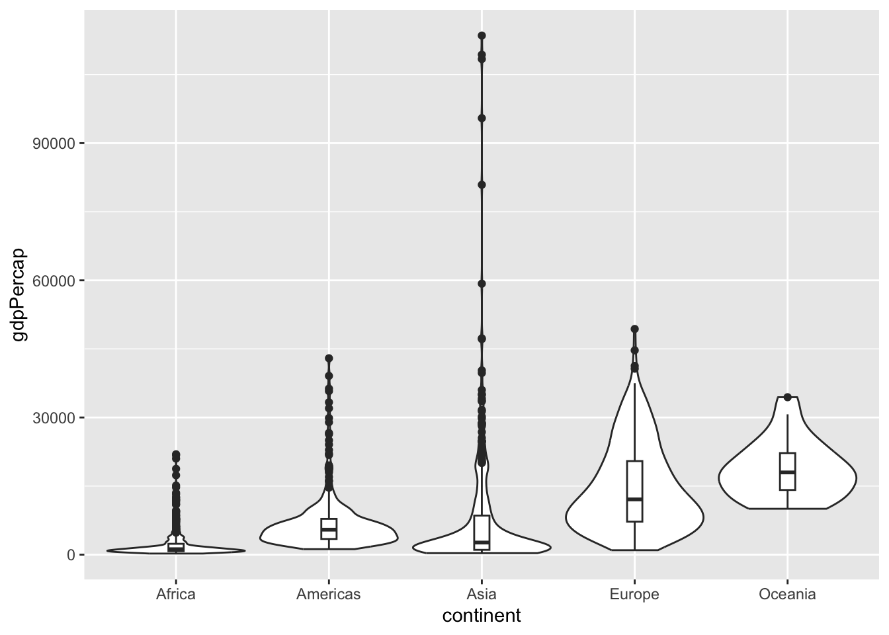
Multiple plots with gridExtra
# Multiple plots with gridExtra
p1 <- ggplot(gapminder) + geom_boxplot(aes(x = continent, y = gdpPercap, fill = continent))
p2 <- ggplot(gapminder) + geom_violin(aes(x = continent, y = gdpPercap, fill = continent))
grid.arrange(p1, p2, nrow = 1)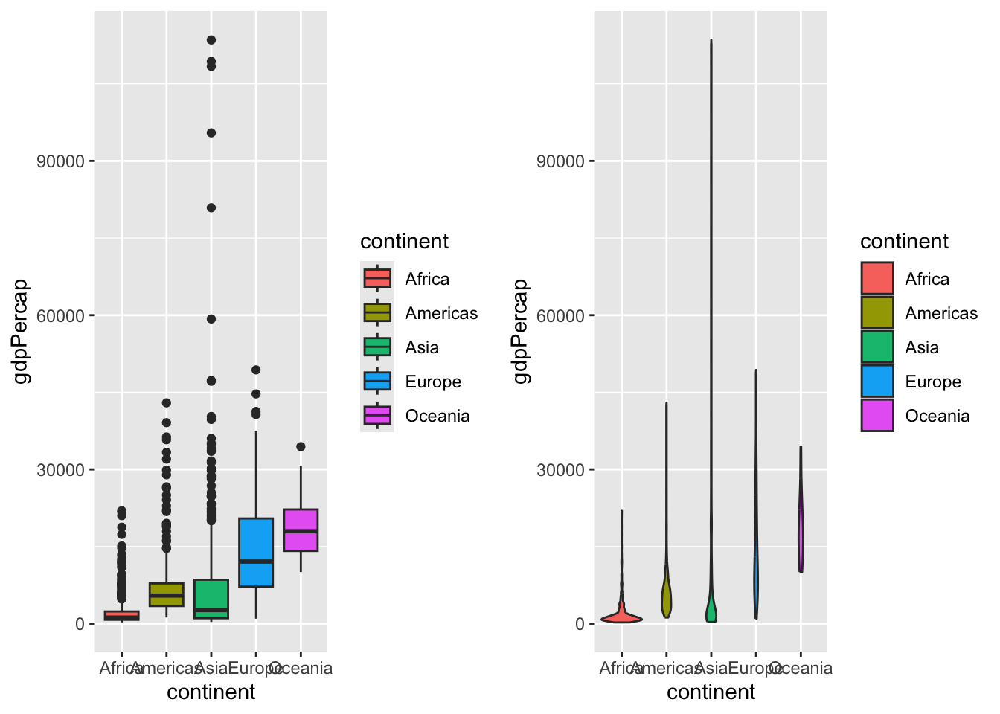
Marginal histogram
# Marginal histogram
p <- ggplot(data = gapminder, aes(x = lifeExp, y = gdpPercap, fill = continent)) +
geom_point() +
theme(legend.position = "none")
ggMarginal(p, type = "histogram")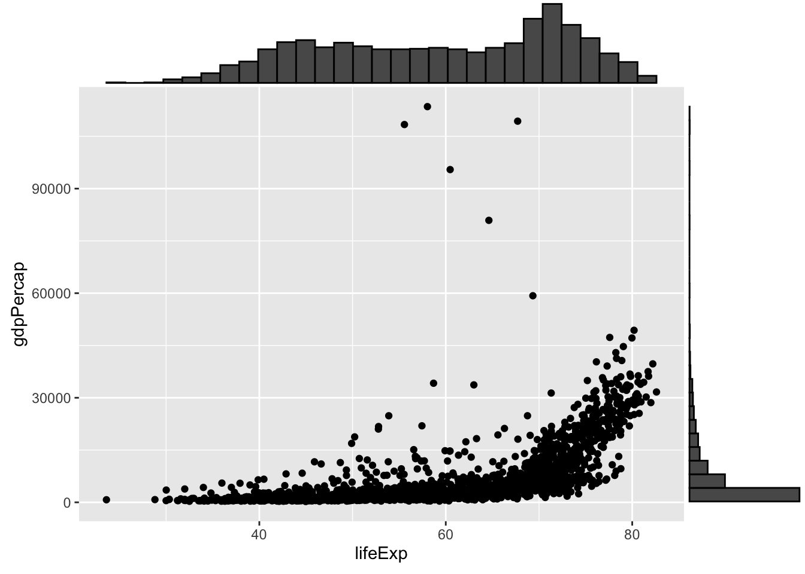
Saving Plots
Save a plot to a file using ggsave.
p1 <- ggplot(data = gapminder, aes(x = lifeExp, y = gdpPercap)) +
geom_point(aes(fill = continent), size = 5, shape = 21) +
geom_smooth(alpha = 0.5) +
scale_fill_brewer(palette = "Set2") +
theme_minimal()
print(getwd())[1] "/Users/svztg/Library/CloudStorage/OneDrive-TheUniversityofNottingham/Digital_Research/Source_Control/Data Science and Digital Skills/training_site/methods_for_data_science/applied_R/episodes"ggsave("myplot.png", plot = p1)Saving 7 x 5 in image
`geom_smooth()` using method = 'gam' and formula = 'y ~ s(x, bs = "cs")'Exercise Solutions
Below are the solutions to the provided exercises.
Exercise 1: Select year, lifeExp, and country
gapminder %>% select(year, lifeExp, country) %>% head()# A tibble: 6 × 3
year lifeExp country
<int> <dbl> <fct>
1 1952 28.8 Afghanistan
2 1957 30.3 Afghanistan
3 1962 32.0 Afghanistan
4 1967 34.0 Afghanistan
5 1972 36.1 Afghanistan
6 1977 38.4 AfghanistanExercise 2: Select all columns except year, lifeExp, and country
gapminder %>% select(-year, -lifeExp, -country) %>% head()# A tibble: 6 × 3
continent pop gdpPercap
<fct> <int> <dbl>
1 Asia 8425333 779.
2 Asia 9240934 821.
3 Asia 10267083 853.
4 Asia 11537966 836.
5 Asia 13079460 740.
6 Asia 14880372 786.Exercise 3: Filter for year 2002
gapminder %>% filter(year == 2002) %>% head()# A tibble: 6 × 6
country continent year lifeExp pop gdpPercap
<fct> <fct> <int> <dbl> <int> <dbl>
1 Afghanistan Asia 2002 42.1 25268405 727.
2 Albania Europe 2002 75.7 3508512 4604.
3 Algeria Africa 2002 71.0 31287142 5288.
4 Angola Africa 2002 41.0 10866106 2773.
5 Argentina Americas 2002 74.3 38331121 8798.
6 Australia Oceania 2002 80.4 19546792 30688.Exercise 4: Store and display data for Asian countries
gapminder_asia <- gapminder %>% filter(continent == "Asia")
head(gapminder_asia)# A tibble: 6 × 6
country continent year lifeExp pop gdpPercap
<fct> <fct> <int> <dbl> <int> <dbl>
1 Afghanistan Asia 1952 28.8 8425333 779.
2 Afghanistan Asia 1957 30.3 9240934 821.
3 Afghanistan Asia 1962 32.0 10267083 853.
4 Afghanistan Asia 1967 34.0 11537966 836.
5 Afghanistan Asia 1972 36.1 13079460 740.
6 Afghanistan Asia 1977 38.4 14880372 786.Exercise 5: Compare Ireland and Brazil in 1977
# Ireland
gapminder %>% filter(year == 1977, country == "Ireland")# A tibble: 1 × 6
country continent year lifeExp pop gdpPercap
<fct> <fct> <int> <dbl> <int> <dbl>
1 Ireland Europe 1977 72.0 3271900 11151.# Brazil
gapminder %>% filter(year == 1977, country == "Brazil")# A tibble: 1 × 6
country continent year lifeExp pop gdpPercap
<fct> <fct> <int> <dbl> <int> <dbl>
1 Brazil Americas 1977 61.5 114313951 6660.Exercise 6: African countries in 2012 with specific criteria
df <- gapminder %>%
filter(continent == "Africa" & year == 2012 & pop <= 3 & lifeExp >= 70) %>%
select(country, continent)
df# A tibble: 0 × 2
# ℹ 2 variables: country <fct>, continent <fct>Exercise 7: Lowest life expectancy
gapminder %>% arrange(lifeExp) %>% head(1)# A tibble: 1 × 6
country continent year lifeExp pop gdpPercap
<fct> <fct> <int> <dbl> <int> <dbl>
1 Rwanda Africa 1992 23.6 7290203 737.Exercise 8: Highest life expectancy
gapminder %>% arrange(desc(lifeExp)) %>% head(1)# A tibble: 1 × 6
country continent year lifeExp pop gdpPercap
<fct> <fct> <int> <dbl> <int> <dbl>
1 Japan Asia 2007 82.6 127467972 31656.Exercise 9: Shortest life expectancy in the Americas in 1962
gapminder %>%
mutate(lifeExpMonths = 12 * lifeExp) %>%
filter(year == 1962, continent == "Americas") %>%
arrange(lifeExpMonths) %>% head(1)# A tibble: 1 × 7
country continent year lifeExp pop gdpPercap lifeExpMonths
<fct> <fct> <int> <dbl> <int> <dbl> <dbl>
1 Bolivia Americas 1962 43.4 3593918 2181. 521.Exercise 10: Summary statistics for life expectancy
gapminder %>%
summarise(
lifeExp_min = min(lifeExp),
lifeExp_max = max(lifeExp),
lifeExp_mean = mean(lifeExp)
)# A tibble: 1 × 3
lifeExp_min lifeExp_max lifeExp_mean
<dbl> <dbl> <dbl>
1 23.6 82.6 59.5Exercise 11: Life expectancy by year
gapminder %>%
group_by(year) %>%
summarise(
lifeExp_min = min(lifeExp),
lifeExp_max = max(lifeExp),
lifeExp_mean = mean(lifeExp)
)# A tibble: 12 × 4
year lifeExp_min lifeExp_max lifeExp_mean
<int> <dbl> <dbl> <dbl>
1 1952 28.8 72.7 49.1
2 1957 30.3 73.5 51.5
3 1962 32.0 73.7 53.6
4 1967 34.0 74.2 55.7
5 1972 35.4 74.7 57.6
6 1977 31.2 76.1 59.6
7 1982 38.4 77.1 61.5
8 1987 39.9 78.7 63.2
9 1992 23.6 79.4 64.2
10 1997 36.1 80.7 65.0
11 2002 39.2 82 65.7
12 2007 39.6 82.6 67.0Exercise 12: Explore join statements
Already demonstrated in the “Joining Data” section above.
Exercise 13: Read a file
This requires a file like gapminder.xlsx. Assuming it’s available:
xl <- read.xlsx("./methods_for_data_scince/applied_R/episodes/data/gapm3.xlsx", sheet = "gap")
head(xl)Exercise 14: Get and split working directory path
# Get working directory
wd <- getwd()
# Split by appropriate delimiter
path_parts <- str_split(wd, "/")[[1]]
# Fetch last element
last_element <- path_parts[length(path_parts)]
print(last_element)[1] "episodes"Conclusion
This document covers key tidyverse functionalities and ggplot2 visualizations using the gapminder dataset. It includes data manipulation, file handling, string manipulation, and various plotting techniques, along with solutions to the exercises.
To download this R Markdown file, save it with a .Rmd extension and open it in RStudio or another R Markdown-compatible environment.